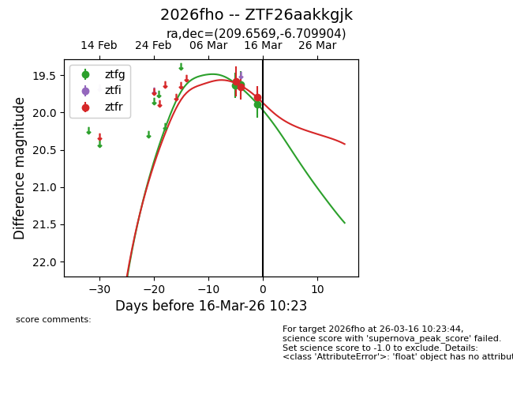
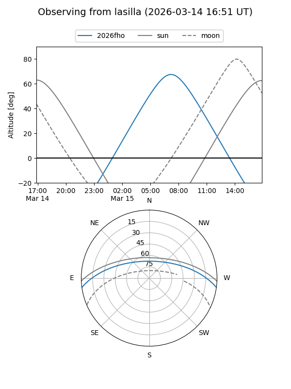
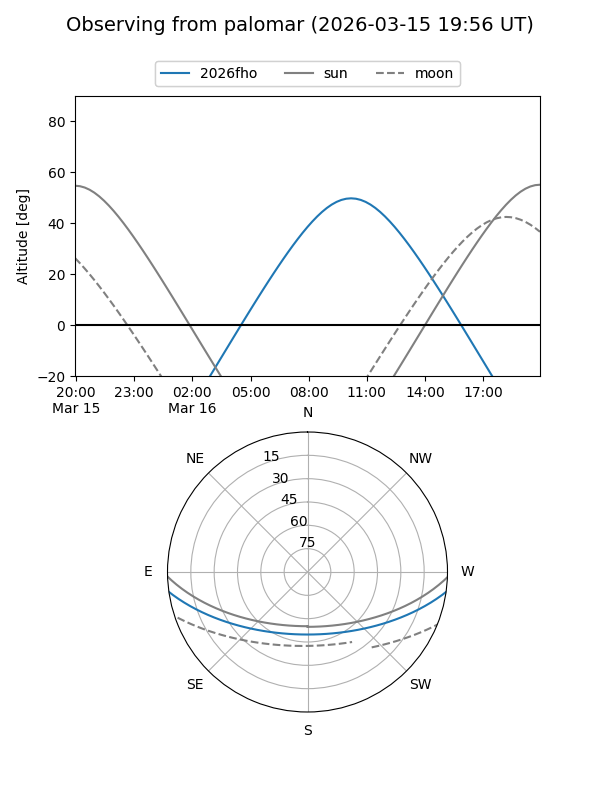
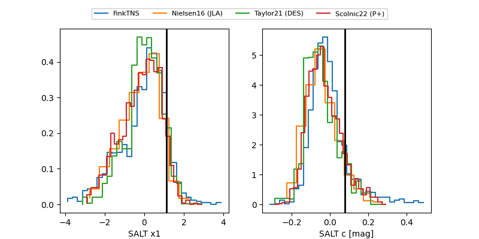

2026fho
Target 2026fho at 2026-03-16 10:25
Aliases and brokers:
FINK: link
Lasair: link
ALeRCE: link
TNS: link
YSE: link
alt names
ZTF26aakkgjk (ztf,fink_ztf)
2026fho (tns,yse)
Coordinates:
equatorial (ra, dec) = 209.6569,-6.70990
equatorial (HMS+DMS) = 13:58:37.65,-06:42:35.66
galactic (l, b) = (331.0316,+52.45739)
Flags:
Photometry:
last ztfg=19.89, ztfr=19.80
3 ztfg, 3 ztfr detections
Lightcurve

Visibility


Additional plots
